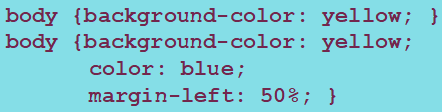

Sintaxis de CSS
Los bloques básicos de construcción de CSS están formados por pares de palabras separadas por ':'.
Se trata de conjuntos de parejas "propiedad:valor", separadas por un ';'. La propiedad es un identificador que define qué características es considerada. El valor, como su nombre indica, describe el valor o valores que toma dicha propiedad.
Para indicar a qué elemento se aplica ese estilo, se utiliza un selector. Se trata de un patrón de elementos y otros términos que indican al navegador qué elementos HTML se seleccionan para aplicarles una regla que incluye los valores de las propiedades CSS.
El formato es: selector[, selector2] {propiedad:valor;[p2:v2;]}
Ejemplo
Tipos de selectores
Selector de tipo
Es el ejemplo de arriba. Se indica el nombre del elemento/s al que se aplicará el estilo.
Selector de clase
Los selectores de clase buscan un elemento basado en el contenido de su atributo class (indicado en HTML).
Se indica poniendo el nombre del elemento seguido de un punto ($.') y el nombre de la clase: selector.clase {propiedad:valor;}
En el caso de que una misma clase sea atributo de diferentes elementos y queramos que todos tengan un mismo estilo, el selector no incluirá el nombre del elemento.
Selector de ID
Buscan un elemento basado en el contenido del atributo id. El atributo ID del elemento seleccionado debe coincidir exactamente con el valor dado en el selector. La sintaxis es: #idElemento {propiedad:valor;}
Al contrario que las clases, los ID son únicos y se refieren únicamente al elemento en el que se indica.
| Selector de tipo | p { propiedad:valor; } | ‹p›Elemento p‹/p› |
|---|---|---|
| Selector de clase | p.clase { propiedad:valor; } | ‹p class="clase"›Elemento p con atributo clase‹/p› |
| Selector de ID | #idElem { propiedad:valor; } | ‹p id="idElem"›Elemento p con ID‹/p› |
Unidades de medida
Porcentaje
Se trata de una de las medidas más usadas en CSS. Se indica con un número seguido del símbolo '%' y siempre referencia a otra medida (al elemento que lo contiene o al ancho de visualización del dispositivo).
Medidas absolutas
Una medida absoluta está completamente definida, ya que su valor no depende de otro de referencia. Algunos ejemplos son:
- px (píxel) → Información de color por punto (1px = 1/96 pulgadas).
- pt (punto) → Relacionado con la impresión láser. Se utiliza mucho en fotocomposición (1pt = 1/72 pulgadas).
- pc (pica) → Medida tipográfica tradicional (1pc = 1/6 pulgadas).
- cm, mm, in (inches o pulgadas)
Medidas relativas
A diferencia de las absolutas, no están completamente definidas, ya que su valor siempre está referenciado respecto a otro valor.
- em (cuadratín) → Ancho de letra. Modifica el tamaño de letra en función del tamaño de su elemento contenedor.
- rem → Es como em pero con respecto al elemento raíz (body), independiente de su contenedor.
- ex (x-height) → Relativo al tamaño de la letra 'x' del tipo y tamaño de letra del elemento.
Ángulos
- deg → Representa un ángulo en grados. Círculo completo: 360°
- grad → Representa un ángulo en grado centesimal. Círculo completo: 400°
- rad → Representa un ángulo en radianes. Círculo completo: 2π
Duración
- s → Segundos
- ms → Milisegundos
Frecuencia
- Hz → Hercios, representan el número de ciclos por segundo.
- kHz → Kilohercios
Resolución
- dpi → Puntos por pulgada
- dpcm → Puntos por centímetro
- dppx → Puntos por píxel